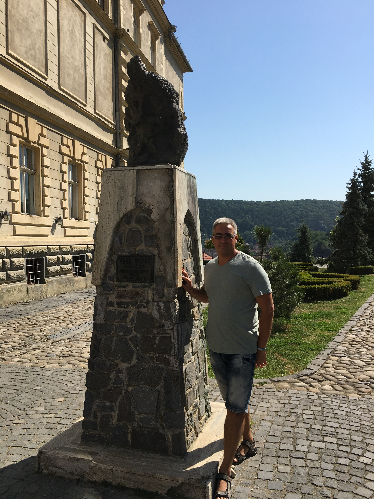

Меня зовут Евгений. Одно из направление бизнеса моих друзей - это Хостелы в Одессе. В этом году мы совместно открыли ещё один объект под названием -
#8 Apartments.
Узнав, что они не хотят создавать сайт этого объекта, мне пришла мысль заняться этим вопросом самостоятельно. Вот так я попал в школу Hillel. Моя цель - научиться создавать сайты.С 1990 года я живу в Одессе. Кроме учёбы в Академии связи я занимался спекуляцией - это так называлась торговля в СССР. Мой опыт за это время: продажи продуктовых товаров, ликероводочных, электротехнических, строительных, бытовая химия, средства гигиены, ведение строительных объектов. Этим я занимался только по Одесской области.
У меня обычная среднестатистическая семья. Есть любимая супруга, выспитываю двух прекрасных девчонок, есть кот и собака.
Я люблю следить за выступлениями наших украинских боксеров - братьев Кличко, Усик, Ломаченко. Смотрю только финальные игры по футболу - Чемпионат Мира, и Европы. Занимаюсь различными видами спорта, это и фитнес, и плавание, и теннис, и сквош, прошёл обучение по дайвингу, и немного изучил парусный вид спорта (но не до конца, в планах этот вопрос обязательно выполнить). В последнии два года стараюсь максимально ходить, и стараюсь в день проходить более 15000 шагов. Люблю путешествовать, познавать разные страны в мире. При выборе очередной поездки в приоритете страна, где мы не бывали, и обязательно такая, где есть что посмотреть в историческом плане. Люблю фотографировать и стараюсь места, где бываю, выкладывать на карту. Из музыки я предпочитаю Фолк-рок, очень люблю французкую музыку (Zaz), конечно наших исполнителей "Океан Эльзы", "ТiК. С супругой мы посещаем и Музкомедию, и Украинский театр, и Русский Театр, с удовольствием смотрим спектакли одесских коллективов.
Я не так давно стал пользоваться соцсетями. Я подписан на YouTube (есть немного видео с выступлениями моей дочери), есть страничка в Instagram, есть профиль в LenkedIn.
